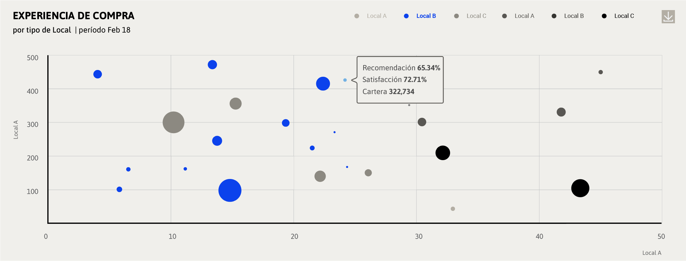

Gráfico de puntos posicionados en un sistema de coordenadas para mostrar los valores de dos variables para un conjunto de datos. El dato puede tener valor (x, y) o (x, y, z) donde z se representa como el diámentro de la burbuja.
CRITERIOS DE ELECCIÓN
Se utiliza cuando se necesita comparar dos variables distintas para un conjunto de datos. Si los datos solo tienen valor (x,y) se recomienda utilizar este gráfico como un gráfico de disperción donde todos los puntos tienen el mismo diámetro. Si los valores de los datos son (x,y,z) se utilizará el valor de z para definir el diámetro de las burbujas. Por otra parte, los datos también pueden estar ordenados por categorías. Si este es el caso, se recomienda no utilizar más de seis.
| Mínimo de categorías |
1 |
| Máximo de categorías |
6 |
CRITERIOS DE IMPLEMENTACIÓN
Este gráfico puede ser utilizado con tres anchos distintos; 4, 6 y 12 columnas. Existen tres criterios para decidir el ancho indicado; El primero será determinado por la cantidad de categorías, el segundo por el total de burbujas y/o valores altos en el eje x. El tercer criterio corresponde a la composición general del dashboard.
Variaciones de tamaño.
El de 4 columnas de ancho se recomienda para gráficos de entre 1 a 3 categorías.
El gráfico de 6 columnas de ancho para gráficos de entre 4 a 6 categorías.
El gráfico de 12 columnas de ancho para gráficos de entre 4 a 6 categorías y también podría considerase cuando los valores de x sean muy altos.

Uso del color
Este gráfico no tiene variaciones de color, se debe usar la paleta primaria.
ANTERIOR
SIGUIENTE